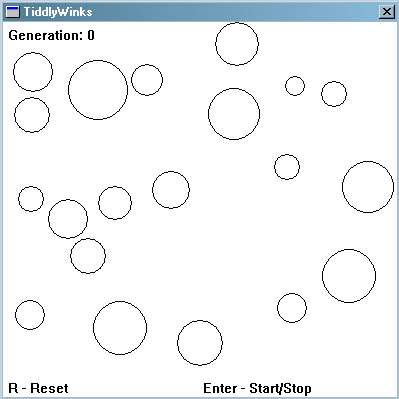
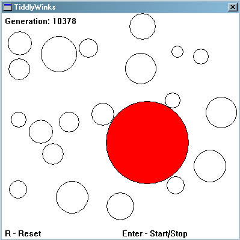

To hammer home the theory you've just learnt let's look at a simple problem:
Given the digits 0 through 9 and the operators +, -, * and /, find a sequence that will represent a given target number. The operators will be applied sequentially from left to right as you read.
So, given the target number 23, the sequence 6+5*4/2+1 would be one possible solution.
If 75.5 is the chosen number then 5/2+9*7-5 would be a possible solution.
Please make sure you understand the problem before moving on. I know it's a little contrived but I've used it because it's very simple.
First we need to encode a possible solution as a string of bits… a chromosome. So how do we do this? Well, first we need to represent all the different characters available to the solution... that is 0 through 9 and +, -, * and /. This will represent a gene. Each chromosome will be made up of several genes.
Four bits are required to represent the range of characters used:
0: 0000
1: 0001
2: 0010
3: 0011
4: 0100
5: 0101
6: 0110
7: 0111
8: 1000
9: 1001
+: 1010
-: 1011
*: 1100
/: 1101
The above show all the different genes required to encode the problem as described. The possible genes 1110 & 1111 will remain unused and will be ignored by the algorithm if encountered.
So now you can see that the solution mentioned above for 23, ' 6+5*4/2+1' would be represented by nine genes like so:
0110 1010 0101 1100 0100 1101 0010 1010 0001
6 + 5 * 4 / 2 + 1
These genes are all strung together to form the chromosome:
011010100101110001001101001010100001
A Quick Word about Decoding
Because the algorithm deals with random arrangements of bits it is often going to come across a string of bits like this:
0010001010101110101101110010
Decoded, these bits represent:
0010 0010 1010 1110 1011 0111 0010
2 2 + n/a - 7 2
Which is meaningless in the context of this problem! Therefore, when decoding, the algorithm will just ignore any genes which don’t conform to the expected pattern of: number -> operator -> number -> operator …and so on. With this in mind the above ‘nonsense’ chromosome is read (and tested) as:
2 + 7
This can be the most difficult part of the algorithm to figure out. It really depends on what problem you are trying to solve but the general idea is to give a higher fitness score the closer a chromosome comes to solving the problem. With regards to the simple project I'm describing here, a fitness score can be assigned that's inversely proportional to the difference between the solution and the value a decoded chromosome represents.
If we assume the target number for the remainder of the tutorial is 42, the chromosome mentioned above
011010100101110001001101001010100001
has a fitness score of 1/(42-23) or 1/19.
As it stands, if a solution is found, a divide by zero error would occur as the fitness would be 1/(42-42). This is not a problem however as we have found what we were looking for... a solution. Therefore a test can be made for this occurrence and the algorithm halted accordingly.
First, please read this tutorial again.
If you now feel you understand enough to solve this problem I would recommend trying to code the genetic algorithm yourself. There is no better way of learning. If, however, you are still confused, I have already prepared some simple code which you can find here. Please tinker around with the mutation rate, crossover rate, size of chromosome etc to get a feel for how each parameter effects the algorithm. Hopefully the code should be documented well enough for you to follow what is going on! If not please email me and I’ll try to improve the commenting.
Note: The code given will parse a chromosome bit string into the values we have discussed and it will attempt to find a solution which uses all the valid symbols it has found. Therefore if the target is 42, + 6 * 7 / 2 would not give a positive result even though the first four symbols("+ 6 * 7") do give a valid solution.
(Delphi code submitted by Asbjørn can be found here and Java code submitted by Tim Roberts can be found here)
Last Words
I hope this tutorial has helped you get to grips with the basics of genetic algorithms. Please note that I have only covered the very basics here. If you have found genetic algorithms interesting then there is much more for you to learn. There are different selection techniques to use, different crossover and mutation operators to try and more esoteric stuff like fitness sharing and speciation to fool around with. All or some of these techniques will improve the performance of your genetic algorithms considerably.
Stuff to Try
If you have succeeded in coding a genetic algorithm to solve the problem given in the tutorial, try having a go at the following more difficult problem:
Given an area that has a number of non overlapping disks scattered about its surface as shown in Screenshot 1,

Screenshot 1
Use a genetic algorithm to find the disk of largest radius which may be placed amongst these disks without overlapping any of them. See Screenshot 2.

Screenshot 2
As you may have already gathered, I've already written some code that solves this problem so if you get stuck you can find it here. (but you will have a go yourself first eh? ;0)). For those of you without compilers, you can get the executable file here.